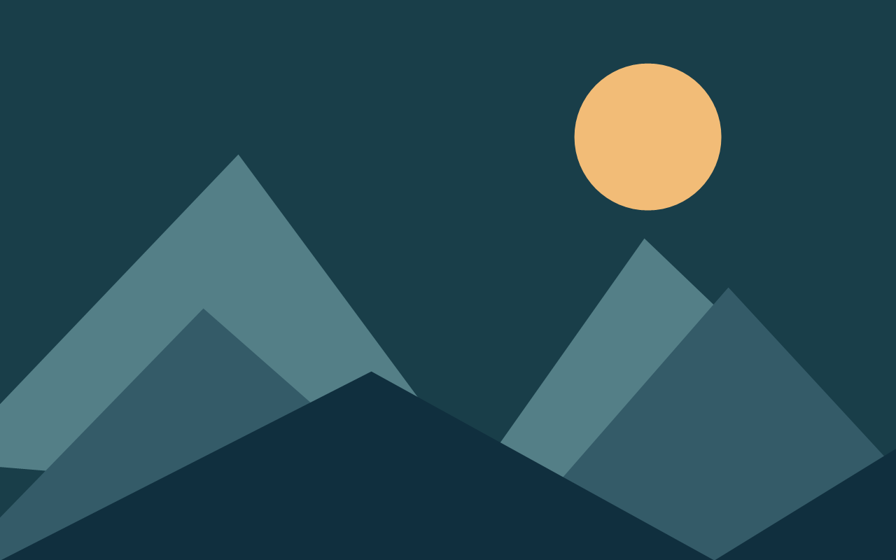

Más allá del horizonte
Una pausa entre montañas y colores.
UN ESPACIO PARA LA CURIOSIDAD
Imágenes que te transportan, sonidos que inspiran y nuevas formas de mirar el mundo.
Explorar la colecciónProyecto académico · HTML + CSS + Git

DESCUBRE ALGO NUEVO
03 piezas para explorar
Ilustración original creada con formas geométricas. Abre la imagen en alta resolución para observar sus detalles.
Un viaje de la oscuridad a la luz: esta portada representa la idea de un cortometraje. Es una demostración visual; no incluye un video reproducible.
Una interpretación gráfica de ondas sonoras. Esta pieza simula la portada de una pista de audio; no incluye una grabación.
DETRÁS DE LA COLECCIÓN
ProyectoMultimedia es una página de demostración para practicar control de versiones con Git. Sus ilustraciones son locales y la página funciona sin conexión.
Volver al inicio ↑